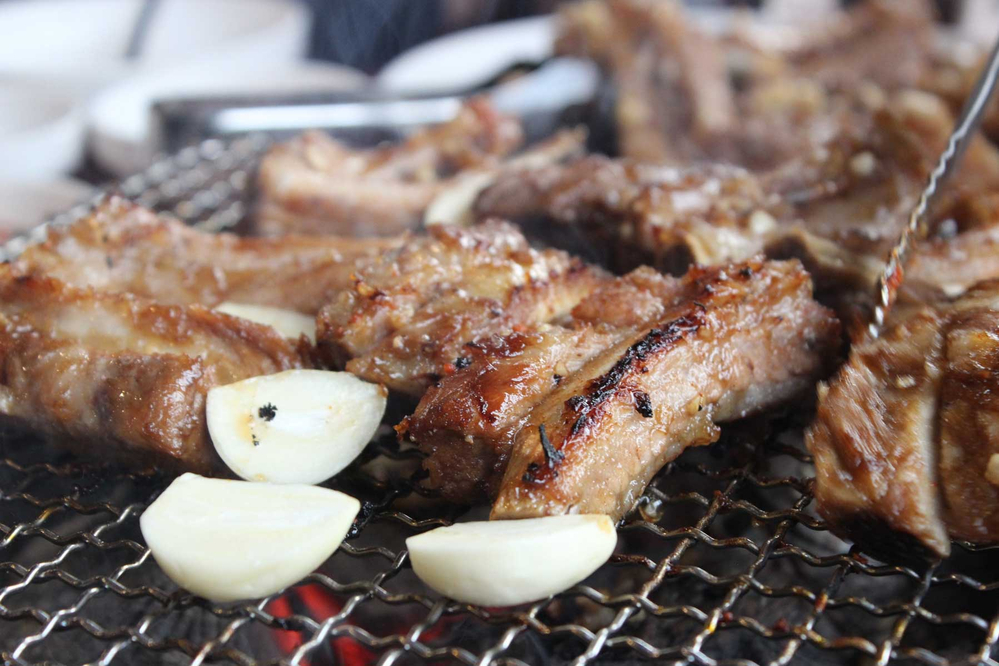

1. Do We Need to Cook for Ourselves?
Yes and no. Some restaurants will have staff to do the cooking for you, but some don’t. If they don’t provide a grilling service, you can simply grill for yourself. Don’t worry, the meat is served in an ‘easy-to- grill’ condition. If you are struggling, you can simply ask the server and they will show you how to grill it properly.
P.S. - Always feel free to ask the server to change the grill when it becomes too smoky.